|  |
| |
97 MB QuickTime movie of “Hemp for Victory” on CD-ROM
| previous page | next page |
Click here to return to the “Jack Rap” video.
HEMP FOR VICTORYThe most recent time America asked our farmers to grow more marijuana was in 1942, in a 14-minute propaganda piece entitled Hemp for Victory. Following is a transcript of the film’s dramatic narrative: |
“Long ago, when these ancient Grecian temples were new, hemp was already old in the service of mankind. For thousands of years, even then, this plant had been grown for cordage and cloth in China and elsewhere in the East. For centuries prior to about 1850 all the ships that sailed the western seas were rigged with hempen rope and sails. For the sailor, no less than the hangman, hemp was indispensable.
A 44-gun frigate like our cherished “Old Ironsides” took over 60 tons of hemp for rigging, including an anchor cable 25 inches in circumference. The Conestoga wagons and prairie schooners of pioneer days were covered with hemp canvas. Indeed the very word canvas comes from the Arabic word for hemp. In those days hemp was an important crop in Kentucky and Missouri. Then came cheaper imported fibers for cordage, like jute, sisal and Manila hemp, and the culture of hemp in America declined.
But now, with Philippine and East Indian sources of hemp in the hands of the Japanese, and shipment of jute from India curtailed, American hemp must meet the needs of our Army and Navy, as well as of our industry. In 1942, patriotic farmers, at the government’s request, planted 36,000 acres of seed hemp, an increase of several thousand percent. The goal for 1943 is 50,000 acres of seed hemp.
In Kentucky much of the seed hemp acreage is on river bottom land such as this. Some of these fields are inaccessible except by boat. Thus plans are afoot for a great expansion of a hemp industry as a part of the war program. This film is designed to tell farmers how to handle this ancient crop now little known outside Kentucky and Wisconsin.
This is hemp seed. Be careful how you use it. For to grow hemp legally you must have a federal registration and tax stamp. This is provided for in your contract. Ask your county agent about it. Don’t forget.
Hemp demands a rich, well-drained soil such as is found here in the Blue Grass region of Kentucky or in central Wisconsin. It must be loose and rich in organic matter. Poor soils won’t do. Soil that will grow good corn will usually grow hemp.
Hemp is not hard on the soil. In Kentucky it has been grown for several years on the same ground, though this practice is not recommended. A dense and shady crop, hemp tends to choke out weeds. Here’s a Canada thistle that couldn’t stand the competition, dead as a dodo. Thus hemp leaves the ground in good condition for the following crop.
For fiber, hemp should be sewn closely, the closer the rows, the better. These rows are spaced about four inches. This hemp has been broadcast. Either way it should be sewn thick enough to grow a slender stalk. Here’s an ideal stand: the right height to be harvested easily, thick enough to grow slender stalks that are easy to cut and process.
Stalks like these here on the left yield the most fiber and the best. Those on the right are too course and woody. For seed, hemp is planted in hills like corn. Sometimes by hand. Hemp is a dioecious plant. The female flower is inconspicuous. But the male flower is easily spotted. In seed production after the pollen has been shed, these male plants are cut out. These are the seeds on a female plant.
Hemp for fiber is ready to harvest when the pollen is shedding and the leaves are fallen. In Kentucky, hemp harvest comes in August. Here, the old standby has been the self-rake reaper, which has been used for a generation or more.
Hemp grows so luxuriantly in Kentucky that harvesting is sometimes difficult, which may account for the popularity of the self-rake with its lateral stroke. A modified rice binder has been used to some extent. This machine works well on average hemp. Recently, the improved hemp harvester, used for many years in Wisconsin, has been introduced in Kentucky. This machine spreads the hemp in a continuous swath. It is a far cry from this fast and efficient modern harvester, that doesn’t stall in the heaviest hemp.
In Kentucky, hand cutting is practiced in opening fields for the machine In Kentucky, hemp is shucked as soon as safe, after cutting, to be spread out for retting later in the fall.
In Wisconsin, hemp is harvested in September. Here the hemp harvester with automatic spreader is standard equipment. Note how smoothly the rotating apron lays the swaths preparatory to retting. Here it is a common and essential practice to leave headlands around hemp fields. These strips may be planted with other crops, preferably small grain. Thus the harvester has room to make its first round without preparatory hand cutting. The other machine is running over corn stubble. When the cutter bar is much shorter than the hemp is tall, overlapping occurs. Not so good for retting. The standard cut is eight to nine feet.
The length of time hemp is left on the ground to ret depends on the weather. The swaths must be turned to get a uniform ret. When the woody core breaks away readily like this, the hemp is about ready to pick up and bind into bundles. Well-retted hemp is light to dark grey. The fiber tends to pull away from the stalks. The presence of stalks in the bough-string stage indicates that retting is well underway. When hemp is short or tangled or when the ground is too wet for machines, it’s bound by hand. A wooden bucket is used. Twine will do for tying, but the hemp itself makes a good band.
When conditions are favorable, the pickup binder is commonly used. The swaths should lie smooth and even with the stalks parallel. The picker won’t work well in tangled hemp. After binding, hemp is shucked as soon as possible to stop further retting. In 1942, 14,000 acres of fiber hemp were harvested in the United States. The goal for 1943 is 300,000 acres of fiber hemp. Thus hemp, the old standby cordage fiber, is staging a strong comeback.
This is Kentucky hemp going into the dryer at a mill at Versailles. In the old days braking was done by hand. One of the hardest jobs known to man. Now the power braker makes quick work of it.
Spinning American hemp into rope yarn or twine in the old Kentucky river mill at Frankfort, Kentucky. Another pioneer plant that has been making cordage for more than a century. All such plants will presently be turning out products spun from American-grown hemp: twine of various kinds for typing and upholsterer’s work; rope for marine rigging and towing; for hay forks, derricks, and heavy duty tackle; light duty firehose; thread for shoes for millions of American soldiers; and parachute webbing for our paratroopers. As for the United States Navy, every battleship requires 34,000 feet of rope; and other ships accordingly. Here in the Boston Navy Yard, where cables for frigates were made long ago, crews are now working night and day making cordage for the fleet. In the old days rope yarn was spun by hand. The rope yarn feeds through holes in an iron plate.
This is Manila hemp from the Navy’s rapidly dwindling reserves. When it is gone, American hemp will go on duty again: hemp for mooring ships; hemp for tow lines; hemp for tackle and gear; hemp for countless naval uses both on ship and shore. Just as in the days when Old Ironsides sailed the seas victorious with her hempen shrouds and hempen sails...Hemp for Victory!”
Permission granted for hempsters to use these images on their web site or in pro-hemp printed materials.
Jack Herer’s “Electric Emperor” CD-ROM includes a complete digital copy of the 1942 USDA “Hemp for Victory” movie, viewable on any computer with QuickTime installed (Macintosh, Windows, Avid, Sun, Silicon Graphics, Be, DEC Raptor, etc.).
To view the movie on a Macintosh, simply double-click the image of the opening frame found in the CD-ROM’s desktop picture. If you get a warning that you need QuickTime, then either drag a copy of QuickTime from the CD-ROM into your System Folder (the Macintosh will automatically put it into the correct location) or turn on QuickTime in your Extensions Manager (found in the Control Panels submenu in the Apple menu) and restart your computer. You may also use any program you normally use for viewing and/or editing QuickTime movies (the movie will be in the Open dialog box at the top level of the CD-ROM).
To view the movie on Windows, you need to find the movie (“HEMPFORV.MOV”) in some kind of document list as Windows does not support desktop pictures for mounted volumes. Once you find the movie, try double-clicking on it. This may or may not work (although with Windows 95 it will work for most mid-range and high end machines). If that fails, you need to install both QuickTime and a movie playing program (as neither comes native with the operating system, although many manufacturers have started including them). The installation process, like any Windows installation process, can take anywhere from a few minutes to several days and may require paid professional help. Also, the installation process may cause existing software or hardware to stop working. Solving these problems may take paid professional help.
To view the movie on high end video editing machines, well, if you got one of those, you probably already know what you are doing!
88 MB QuickTime movie of Hemp for Victory
WARNING: Your browser will attempt to load an entire copy of the movie to your hard drive. If your browser cache is too small or there is not enough hard disk space, your browser will crash. If it works, there will be a delay of two to eight minutes while the movie loads. You can also view this movie by leaving your browser and using your movie player program, then return to your browser after seeing the movie.
Windows: If you are using Windows, you will not be able to view this movie in your browser. This is the result of inherent limitations in Window’s pale imitation of the Macintosh’s aliases (called “shortcuts” on Windows). The technical limitation is that Window’s shortcuts use a fixed physical drive letter rather than the logical volume name in the full paths names of the shortcut. This kind of problem was solved in most computer operating systems by the early 1960s (more than 20 years before Microsoft made Windows 1). I don’t want to sound harsh, but you are the ones who decided that lots of advertising with Rolling Stones songs made a better operating system than quality engineering.
You can present the movie to a small group by having them huddle around a computer monitor. For larger groups, you will need to either transfer the movie to video tape or present it through video presentation hardware.
If you have an AV-equipped Macintosh, you can directly output the movie to video tape through the movie player on the CD-ROM or through any video software on your machine. If you have video software (Premiere, After Effects, or even Director), you can also mix in other sounds and images from the disk for a personalized video presentation.
From either a Macintosh or many Windows machines, you can also show the movie through a video presentation system. Ironically, although the industry standard computer input for video presentation systems is DOS’s VGA, only some Windows machines will connect up to those systems, while Macintoshes connect up painlessly and easily. If you are showing the movie through a video presentation system using a Windows machine, arrive early, request professional help to assist you in the hook up, and have a fall-back presentation that doesn’t include the movie.
The “Hemp for Victory” movie has more than 30,000 individual grayscale pictures (although, obviously, many are very similar to the ones immediately before and after) covering a wide range of hemp uses and history. And all of these pictures are in the public domain. So, here is a great resource for adding pictures to your pro-hemp newsletters, fliers, and posters.
It is possible to collect and process the pictures using Windows, but it ain’t easy. Windows was intended for ordinary business use, while the Macintosh is highly optimized for professional content production (the Macintosh also handles ordinary business use, and the new Rhapsody operating system adds high end science, engineering, and mathematics capabilities to the Macintosh’s content production capabilities). I will describe the procedure on the Macintosh and you can try to figure out how to translate it to Windows (and if you do, please send me your steps so I can post them for other Windows’s hempsters.
Open up the movie in the same manner described above (either by double-clicking or by using your professional video software). Also open up any graphics program and get a new document 160 pixels wide by 120 pixels tall. Use the slider at the bottom of the movie to go to the exact frame you want (you can also use the right and left arrow keys on the keyboard to go back and forth one frame at a time). While still in the movie, use copy (Command-C from the Edit Menu) to collect the picture. Switch to the graphics program and use paste (Command-P from the Edit Menu). You could make a flyer or poster entirely in your graphics program, but many of you will want to use the abilities of a word processor or page layout program to make a better overall presentation of text and pictures.
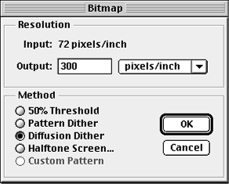
If you are doing low-budget printing, such as duplicating with a Xerox machine, then you will want to convert the picture from grayscale to pure black-and-white. Use whatever method your program has for making a mode change to convert the picture to a dithered black and white image (in PhotoShop, convert to grayscale [discarding color information], then convert to black and white using the options of 300 dpi for destination [or whatever the resolution of your printer] and either diffusion or pattern dithering ’ diffusion is recommended). Save the picture as PICT (or some other format you know works with your target program).
For hempsters on a budget, you can use Tex-Edit Plus  (donated to the CD-ROM by Tom Bender) as a simple layout program, mixing text and pictures. You will still need to find a shareware graphics program to do the mode change (if anyone wants to donate one for the next edition of the CD-ROM, please contact me).
(donated to the CD-ROM by Tom Bender) as a simple layout program, mixing text and pictures. You will still need to find a shareware graphics program to do the mode change (if anyone wants to donate one for the next edition of the CD-ROM, please contact me).
The steps for using the pictures for the web are even easier, as there is no mode change involved. Simply open up the movie and your graphics program (PhotoShop, Debabilizer, and GIFConverter all do a fine job, and GIFConverter is shareware). Copy and paste the selected frame over, then save the picture as a GIF file. When used in grayscale, GIF is a non-loss picture compression format.
Or you can just simply download any of the sample pictures below, which are already in GIF format.
The command below (with the appropriate picture title) is inserted into your web page source code. The size of all of these pictures is 122 pixels tall by 162 pixels wide (because of a one pixel black border all around). The names for each picture are underneath the corresponding picture.
<IMG HEIGHT=122 WIDTH=162 SRC="./FIELD2.GIF">
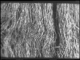 |
||
| BALE.GIF | BARN.GIF | BATTLE1.GIF |
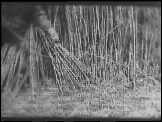 |
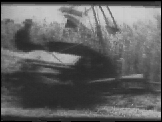 |
|
| BATTLE2.GIF | CUTTING.GIF | FARMING1.GIF |
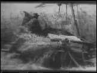 |
 |
 |
| FARMING2.GIF | FARMING3.GIF | FARMING4.GIF |
 |
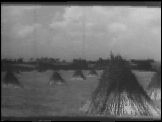 |
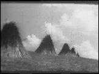 |
| FARMING5.GIF | FIELD1.GIF | FIELD2.GIF |
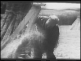 |
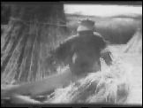 |
 |
| HAND.GIF | HAND2.GIF | INDOORS.GIF |
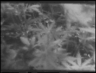 |
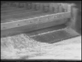 |
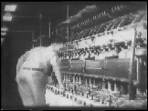 |
| LEAVES.GIF | MACHINE.GIF | MAN.GIF |
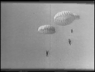 |
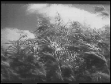 |
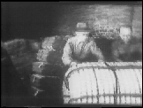 |
| PARACHUT.GIF | PLANTS.GIF | PUSHROPE.GIF |
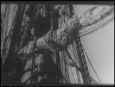 |
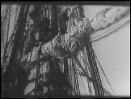 |
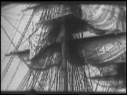 |
| RIGGING1.GIF | RIGGING2.GIF | RIGGING3.GIF |
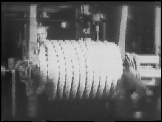 |
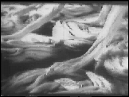 |
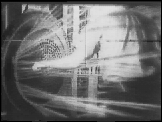 |
| ROPEROLL.GIF | ROPES.GIF | ROPEWALK.GIF |
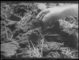 |
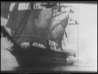 |
|
| SAILORS.GIF | SEEDLING.GIF | SHIP.GIF |
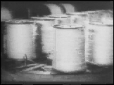 |
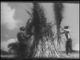 |
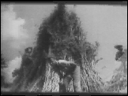 |
| SPOOL.GIF | STACK.GIF | STACK2.GIF |
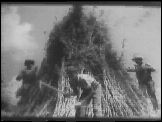 |
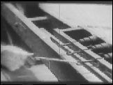 |
|
| STACK3.GIF | STAMP.GIF | TWIST.GIF |
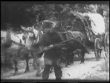 |
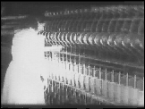 |
|
| VICTORY.GIF | WAGON.GIF | WOMAN.GIF |
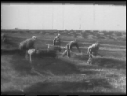 |
||
| WORKERS.GIF |
the authorized on-line version of Jack Herer’s “The Emperor Wears No Clothes”
| previous page | next page |
|
 |
 |
 |
 |